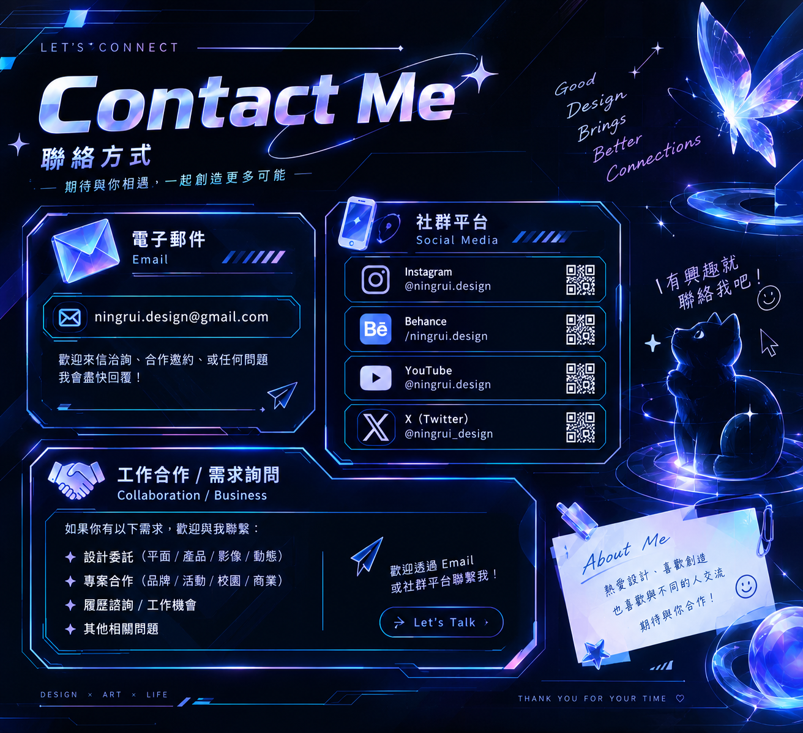
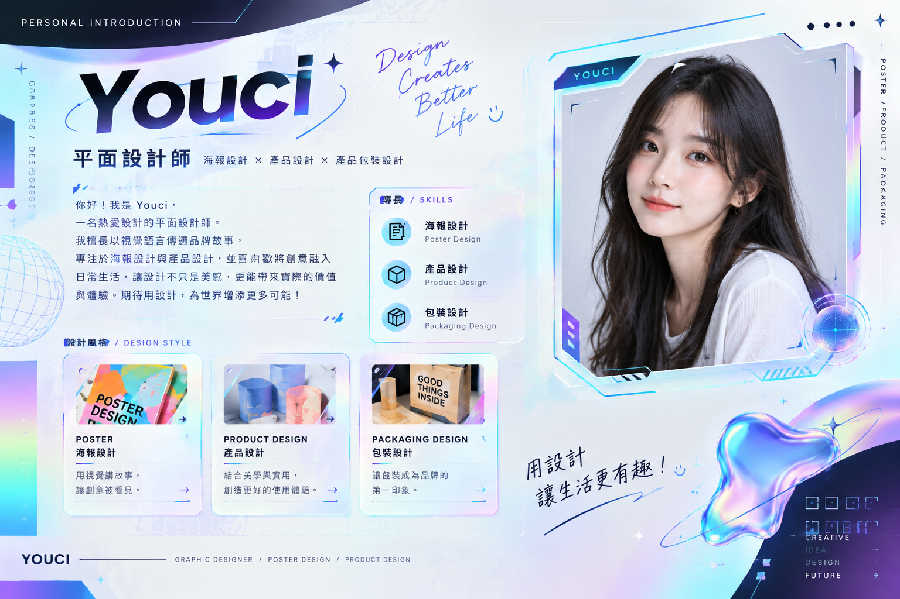
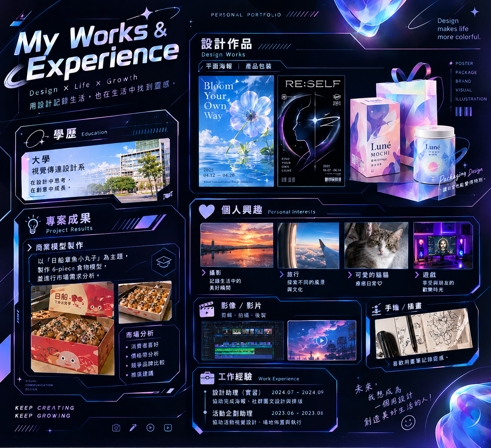
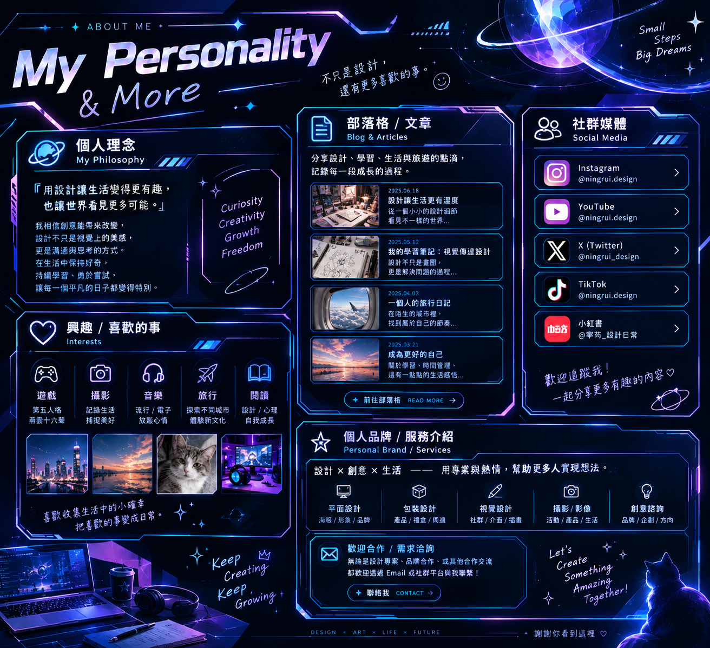

01 / POSTER DESIGN
花漾日常 — 主題海報
以花朵與光影為靈感，透過色彩層次描繪自在綻放的日常。
AVAILABLE FOR PROJECTS
你好，我是 Youci
一名熱愛觀察與創作的平面設計師。從品牌視覺到產品包裝， 我用細節說故事，讓每個想法都擁有自己的光。

A LITTLE ABOUT ME
01 / ABOUT

「用設計讓生活變得更有趣，
也讓世界看見更多可能。」
我相信創意能帶來改變。設計不只是視覺上的美感，更是溝通與思考的方式。 我喜歡從日常細節找靈感，將想法轉化為清楚、有溫度，也真正好用的設計。
從品牌識別、海報設計到產品包裝，我享受每一次探索問題與打磨細節的過程； 也期待與不同領域的夥伴一起，把好點子變成看得見的成果。
SELECTED WORKS
02 / PORTFOLIO
精選視覺設計與品牌專案，持續更新中。
2023 — 2025 ✳ SELECTED PROJECTS
01 / POSTER DESIGN
以花朵與光影為靈感，透過色彩層次描繪自在綻放的日常。

02 / PACKAGING
將溫柔的品牌個性延伸至包裝，創造拆封時的小小驚喜。
03 / BRAND IDENTITY
以光與輪廓呈現重新認識自我的旅程，建立完整視覺語言。
04 / COMMERCIAL CONCEPT
從市場觀察出發，整合包裝提案、產品呈現與品牌溝通。
THE JOURNEY SO FAR
03 / EXPERIENCE
EDUCATION
學習平面設計、品牌企劃與數位媒體，持續探索視覺傳達的更多可能。
INTERNSHIP
協助完成海報、社群圖文與提案排版，參與設計討論與修改流程。
PROJECT EXPERIENCE
參與活動主視覺設計與場地佈置，將企劃概念轉化為一致的視覺體驗。
BEYOND DESIGN
04 / MORE
LET'S MAKE SOMETHING GOOD
設計委託、專案合作、履歷詢問，或只是想認識新朋友，都歡迎來信。
hello@example.com請將 hello@example.com 修改為你的聯絡信箱